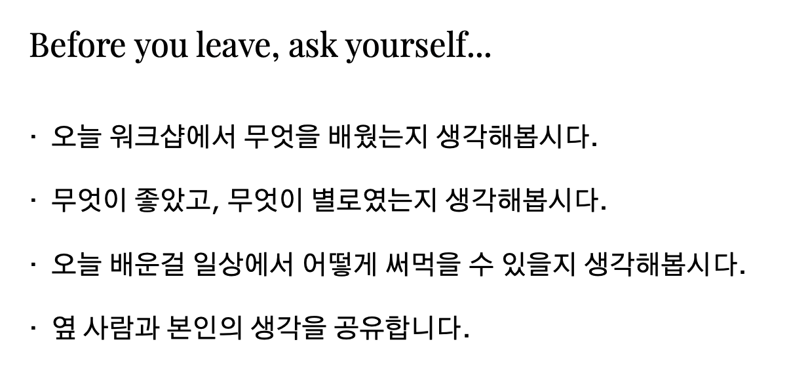
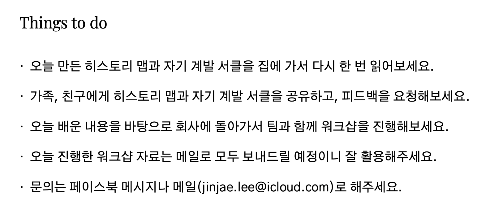

- Check in
- _____ of the year
- History map
- Reflection
Coffee break
- Theme of the next year
- Self development circle
- Check out
Check out


- 오늘 워크샵에서 무엇을 배웠는지 생각해봅시다.
- 무엇이 좋았고, 무엇이 별로였는지 생각해봅시다.
- 오늘 배운걸 일상에서 어떻게 써먹을 수 있을지 생각해봅시다.
- 옆 사람과 본인의 생각을 공유합니다.
- 오늘 만든 히스토리 맵과 자기 계발 서클을 집에 가서 다시 한 번 읽어보세요.
- 가족, 친구에게 히스토리 맵과 자기 계발 서클을 공유하고, 피드백을 요청해보세요.
- 오늘 배운 내용을 바탕으로 회사에 돌아가서 팀과 함께 워크샵을 진행해보세요.
워크샵 어떠셨나요? 코멘트를 기다립니다 :)